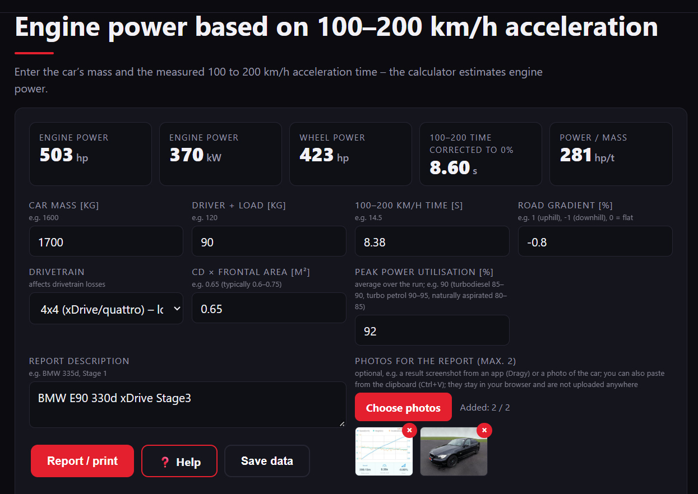
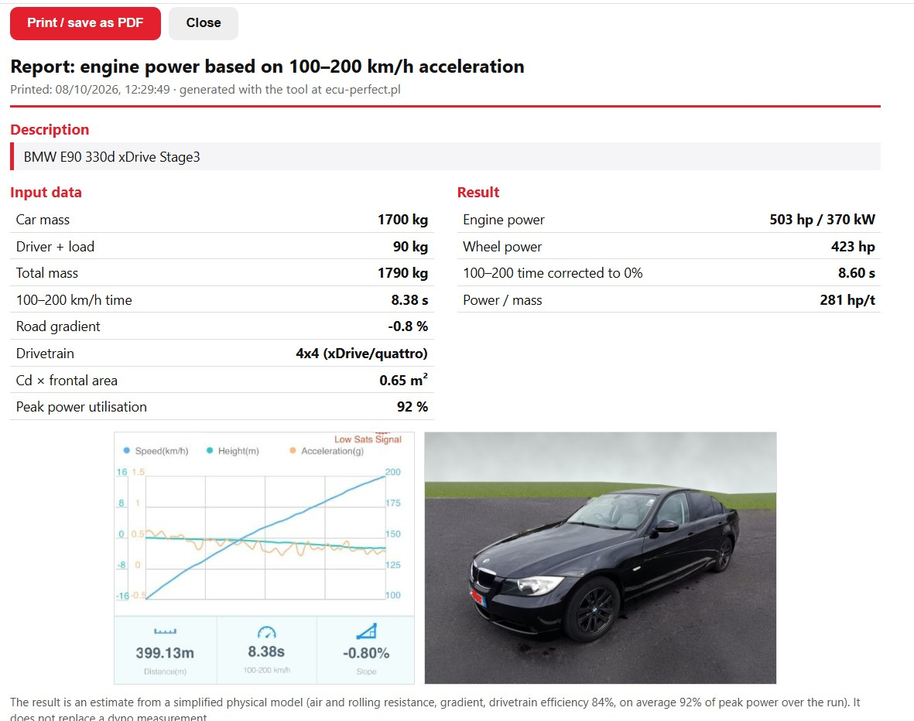

Pomoc: moc silnika na podstawie przyspieszenia 100–200 km/h
Narzędzie szacuje moc silnika z czasu przyspieszenia od 100 do 200 km/h. Przy tych prędkościach przyczepność najczęściej nie ma już znaczenia, więc wynik zależy głównie od mocy, masy i oporów ruchu.
Jak użyć krok po kroku
- Zmierz czas 100–200 km/h np. aplikacją Dragy lub RaceLogic (jak na przykładzie: 8,38 s, nachylenie −0,80%). Uwaga: licznik pokazuje najczęściej prędkość wyższą, więc filmik z licznikiem nie jest najlepszą metodą pomiaru ;)
- Wpisz dane auta (zważ auto!) i zmierzony czas (opis pól niżej). Wynik przelicza się na bieżąco, nie ma przycisku „Oblicz”.
- Opcjonalnie wpisz opis auta do raportu i dodaj do dwóch zdjęć (np. zdjęcie auta i z pomiarem). Możesz też wkleić obraz ze schowka (Ctrl+V). Zdjęcia zostają w Twojej przeglądarce i nigdzie nie są wysyłane.
- Kliknij „Raport / wydruk”. Otworzy się karta z gotowym raportem, w której przycisk „Drukuj / zapisz jako PDF” zapisze go do pliku.

Pola wejściowe
| Pole | Co oznacza | Przykład |
|---|---|---|
| Masa auta [kg] | Pamiętaj, że dane w dowodzie są orientacyjne, a to istotny parametr do obliczeń, więc musisz zważyć auto. | 1700 |
| Kierowca + ładunek [kg] | Wszystko, co jest w aucie oprócz niego samego. Kalkulator dodaje to do masy auta. | 90 |
| Czas 100–200 km/h [s] | Zmierzony czas przyspieszenia. | 8,38 |
| Nachylenie drogi [%] | Średnie nachylenie odcinka. Plus oznacza jazdę pod górę, minus z górki, 0 to płasko. Aplikacja GPS zwykle je pokazuje. | −0,8 |
| Napęd | FWD, RWD lub 4x4. Wpływa na straty w układzie napędowym (ok. 10%, 12% i 16%). | 4x4 |
| Cd × pow. czołowa [m²] | Opór aerodynamiczny. Typowo dla aut osobowych 0,6–0,75. Dla aut wyższych, np. SUV-ów, opór jest większy! | 0,65 |
| Wykorzystanie mocy szczytowej [%] | Jaką część mocy maksymalnej silnik oddaje średnio na całym odcinku, bo moc zmienia się z obrotami i są zmiany biegów. Typowo: turbodiesel 85–90, turbobenzyna 90–95, wolnossąca benzyna 80–85 (wartości orientacyjne). To najbardziej wpływowe pole: zmiana o 5 punktów przesuwa wynik o kilkadziesiąt KM. | 92 |
| Opis do raportu | Dowolny tekst, który trafi do raportu, np. marka, model i wersja auta. | BMW E90 330d xDrive Stage3 |
Wyniki
| Wynik | Co oznacza | Przykład |
|---|---|---|
| Moc silnika | Szacowana moc na wale silnika w KM i kW. | 503 KM / 370 kW |
| Moc na kołach | Moc silnika pomniejszona o straty napędu. | 423 KM |
| Czas 100–200 po korekcie na 0% | Czas, jaki auto z tą mocą uzyskałoby na płaskiej drodze. Pozwala porównywać pomiary z różnych odcinków. | 8,60 s (zmierzone 8,38 s, bo jazda była lekko z górki) |
| Moc / masa | Moc silnika w stosunku do masy całkowitej (auto + kierowca). | 281 KM/t |
Zapamiętywanie, zapis i odczyt danych
Wpisane dane są automatycznie zapamiętywane w Twojej przeglądarce, więc po ponownym wejściu na stronę nie musisz ich wpisywać od nowa.
Przycisk „Zapisz dane” zapisuje wszystkie wpisane wartości i opis do pliku .json (nazwa pliku pochodzi z opisu auta). Przyciskiem „Wczytaj dane” wczytasz taki plik z powrotem. Dzięki temu możesz mieć osobne zestawy dla różnych aut albo przenieść dane na inny komputer. Zdjęcia nie są zapisywane.
Raport
Raport zawiera opis, dane wejściowe, wyniki i do dwóch zdjęć. Przycisk „Drukuj / zapisz jako PDF” otwiera okno drukowania, w którym możesz wybrać zapis do pliku PDF.

O czym warto pamiętać
To szacunek, nie pomiar na hamowni. Realny rozrzut to rzędu ±5–10% i zależy od jakości pomiaru czasu, wiatru, nachylenia, aerodynamiki i przyjętego wykorzystania mocy, rodzaju skrzyni biegów, liczby biegów i prędkości ich zmiany, szerokości opon itp. Najlepiej używać go do porównań „przed i po” na tym samym odcinku i przy podobnych warunkach.
← Wróć do kalkulatora